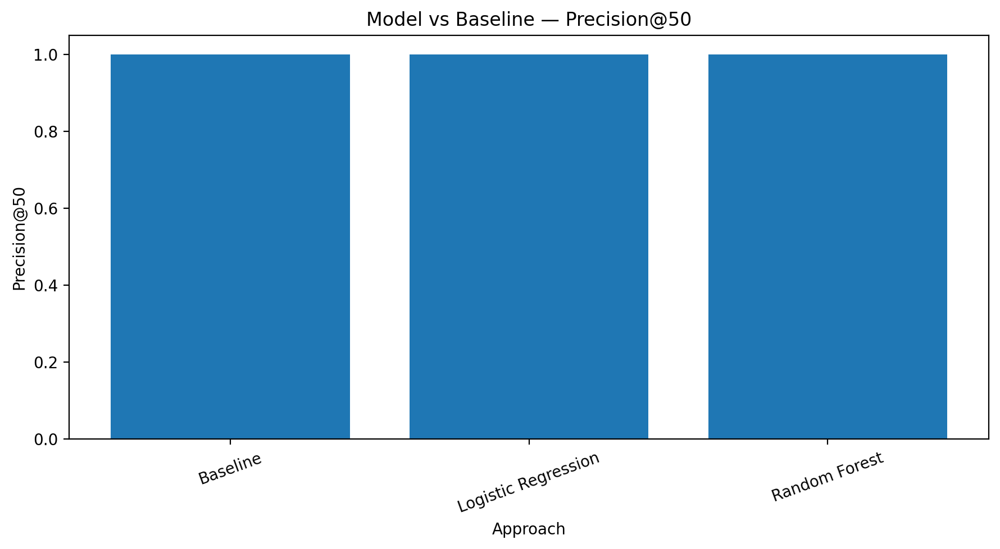
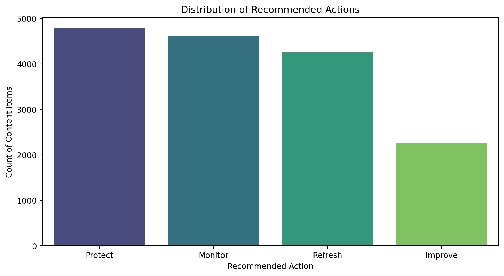

FlyRank ML Internship · Applied Search Intelligence · Refresh / Content Opportunity Scoring lane
Content teams often have more pages to review than they can inspect manually. The decision this analysis supports is: Which content should a content team review first? The goal is not to automatically change content. Instead, the model creates a ranked review queue so that limited content-review time can be focused on pages showing stronger evidence of decline. This is decision-support, not a claim about Google's ranking algorithm or about causal impact.
The analysis uses the gated FlyRank internship-warehouse release, hosted on Hugging Face and queried through DuckDB rather than downloaded as one large file. The FlyRank starter documentation describes the full warehouse as approximately 79 million rows and recommends DuckDB for aggregation before modeling in scikit-learn.
Relevant tables:
dim_clients — client-level history and access metadata;dim_content — pseudonymous content metadata;fact_content_daily_performance — daily client × content performance (primary source for features and labels);fact_content_query_90d — query-mix context, not used in the predictive feature set because its fixed recent window can overlap a future-label period.The available date window runs from 2025-01-27 to 2026-06-30. Feature and evaluation periods are taken directly from the available data, and no future information is used as a model feature.
Intentionally excluded from the public output: client names, domains, URLs, private queries, credentials, and raw warehouse exports. Client and content identifiers are used only for grouping and validation, never as model features.
Assumptions. The analysis assumes historical performance signals can help prioritize pages for review. It does not assume that any individual signal causes a future change.
Label. Following the FlyRank reference workflow, is_declining_label = (trend_direction == "down"). Because trend_direction and trend_pct directly reveal the target or contain information derived from it, they are excluded from the model feature set to prevent target leakage.
Features. The model uses safe historical content-performance signals available before the decision point — including historical impressions, clicks, CTR, engagement, visibility/ranking signals, momentum, and content-level aggregates — totaling 21 features. Identifiers are used only for grouping.
Baseline. A transparent hand-written scoring rule that ranks pages using observable performance signals rather than a trained model. Its purpose is to answer whether the learned model improves ranking quality compared with a simple rule.
Validation. A client-level holdout holds out approximately 20% of clients (training: 117,944 rows across 41 clients; test: 15,908 rows across 11 clients). Client overlap between train and test is 0, so pages from the same client cannot appear in both sets. Models trained were logistic regression and random forest (both class-weighted).
Leakage checks. Before training, the notebook verifies that is_declining_label, trend_direction, and trend_pct are not features; that client and content identifiers are not features; and that future-derived information is not included in predictors.
Evaluation. The primary ranking metric is Precision@50, because the operational use case is to identify a small number of pages that deserve review first. ROC-AUC and Average Precision are reported as broader ranking diagnostics.
The model and baseline are evaluated on exactly the same held-out client set (15,908 rows, 11 clients). No performance number is manually entered; all values below are generated by executing the notebook.
| Model | ROC-AUC | Average Precision | Precision@50 |
|---|---|---|---|
| Baseline | 1.0000 | 1.0000 | 1.0 |
| Logistic Regression | 0.9894 | 0.9934 | 1.0 |
| Random Forest | 1.0000 | 1.0000 | 1.0 |
Logistic Regression was selected as the best learned model by Precision@50. The charts below compare ranking performance against the baseline and summarize the recommended action mix.


This analysis is an observational, decision-support system for prioritizing content review. It reports measured relationships between historical signals and the observed decline label, and it compares ranking performance on a held-out client set. The findings are observed, measured, and directional.
This work cannot: prove how Google's ranking algorithm works; prove that any individual feature causes ranking changes; prove that a content refresh will cause traffic or visibility to recover; guarantee future performance for a particular page; establish causal relationships; or claim the model will perform identically on every site or future dataset.
The dataset is observational and aggregated, with different clients having different history lengths, traffic levels, and content distributions. The decline label is an operational definition, not a universal definition of poor content quality. The model produces a ranking score rather than certainty — a high score means “review earlier,” not “refresh will definitely improve performance.” The client-level holdout reduces client leakage but does not guarantee generalization to unseen future periods.
Future work could add time-based validation, repeated client holdouts, prospective evaluation, probability calibration, additional historical windows, and monitoring after recommended content changes.
The final output is a ranked content-review queue that helps a content team decide what to review first, rather than automatically deciding what should be changed. Each item receives a model score, a rank, its observed recent performance movement, and a recommended review action. Reason codes are descriptive signals, not causal explanations.
Ranking principle: higher model score → earlier human review, not higher score → guaranteed need for a content refresh. Over the evaluated queue, the measured action distribution was: Protect 4,782 · Monitor 4,617 · Refresh 4,253 · Improve 2,256.
[Insert your ranked queue / chart image here using an img tag, e.g., <img src="images/results_chart.png" alt="Model vs Baseline Chart">]
You can view the full methodology and code in the project repository. The analysis is implemented in work/notebooks/capstone.ipynb: DuckDB aggregates the hosted warehouse, pandas performs feature engineering, and scikit-learn trains and evaluates the models. To reproduce, open the notebook in Colab, store a Hugging Face READ token as a secret named HF_TOKEN, request access to FlyRank/internship-warehouse, and run all cells from top to bottom. Never commit the Hugging Face token or raw warehouse exports.
Built on the FlyRank ML Internship dataset. Data provided by flyrank.ai. The analysis follows the dataset's public-safety requirements and frames findings as observed, measured, directional, and decision-support.